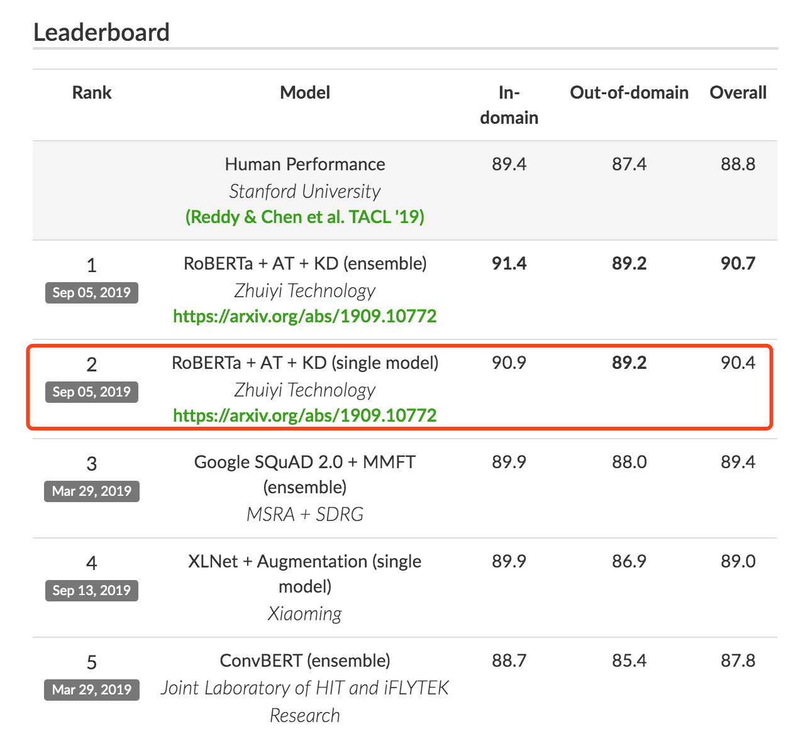

本文分享一个“万物皆可盘”的NLP对抗训练实现，只需要四行代码即可调用。你值得拥有。
最近，微软的FreeLB-Roberta [1] 靠着对抗训练 (Adversarial Training) 在GLUE榜上超越了Facebook原生的Roberta，追一科技也用到了这个方法仅凭单模型 [2] 就在CoQA榜单中超过了人类，似乎“对抗训练”一下子变成了NLP任务的一把利器。刚好笔者最近也在看这方面的内容，所以开一篇博客，讲一下。

提到“对抗”，相信大多数人的第一反应都是CV中的对抗生成网络 (GAN)，殊不知，其实对抗也可以作为一种防御机制，并且经过简单的修改，便能用在NLP任务上，提高模型的泛化能力。关键是，对抗训练可以写成一个插件的形式，用几行代码就可以在训练中自由地调用，简单有效，使用成本低。不过网上的大多数博客对于NLP中的对抗训练都介绍得比较零散且无代码实现，笔者在这篇博客中，对NLP任务中的对抗训练做了一个简单的综述，并提供了插件形式的PyTorch实现。
本文专注于NLP对抗训练的介绍，对对抗攻击基础感兴趣的读者，可以看这几篇博客及论文 [3] [4] [5]，这里就不赘述了。不想要理解理论细节的读者也可以直接看最后的代码实现。
对抗样本
我们常常会听到“对抗样本”、“对抗攻击”、“对抗训练”等等这些令人头秃的概念，为了让大家对“对抗”有个更清晰的认识，我们先把这些概念捋捋清楚。
Szegedy在14年的ICLR中 [6] 提出了对抗样本这个概念。如上图，对抗样本可以用来攻击和防御，而对抗训练其实是“对抗”家族中防御的一种方式，其基本的原理呢，就是通过添加扰动构造一些对抗样本，放给模型去训练，以攻为守，提高模型在遇到对抗样本时的鲁棒性，同时一定程度也能提高模型的表现和泛化能力。
那么，什么样的样本才是好的对抗样本呢？对抗样本一般需要具有两个特点：
- 相对于原始输入，所添加的扰动是微小的；
- 能使模型犯错。
下面是一个对抗样本的例子，决定就是你啦，胖达：
对抗训练的基本概念
GAN之父Ian Goodfellow在15年的ICLR中 [7] 第一次提出了对抗训练这个概念，简而言之，就是在原始输入样本 $x$ 上加一个扰动 $r_{adv}$ ，得到对抗样本后，用其进行训练。也就是说，问题可以被抽象成这么一个模型：
其中，$y$为gold label，$\theta$ 为模型参数。那扰动要如何计算呢？Goodfellow认为，神经网络由于其线性的特点，很容易受到线性扰动的攻击。
This linear behavior suggests that cheap, analytical perturbations of a linear model should also damage neural networks.
于是，他提出了 Fast Gradient Sign Method (FGSM) ，来计算输入样本的扰动。扰动可以被定义为：
其中，$\text{sgn}$为符号函数，$L$为损失函数。Goodfellow发现，令$\epsilon=0.25$，用这个扰动能给一个单层分类器造成99.9%的错误率。看似这个扰动的发现有点拍脑门，但是仔细想想，其实这个扰动计算的思想可以理解为：将输入样本向着损失上升的方向再进一步，得到的对抗样本就能造成更大的损失，提高模型的错误率。回想我们上一节提到的对抗样本的两个要求，FGSM刚好可以完美地解决。
在 [7] 中，Goodfellow还总结了对抗训练的两个作用：
- 提高模型应对恶意对抗样本时的鲁棒性；
- 作为一种regularization，减少overfitting，提高泛化能力。
Min-Max 公式
在 [7] 中，对抗训练的理论部分被阐述得还是比较intuitive，Madry在2018年的ICLR中 [8]总结了之前的工作，并从优化的视角，将问题重新定义成了一个找鞍点的问题，也就是大名鼎鼎的Min-Max公式：
该公式分为两个部分，一个是内部损失函数的最大化，一个是外部经验风险的最小化。
- 内部max是为了找到worst-case的扰动，也就是攻击，其中，$L$ 为损失函数，$\mathcal{S}$ 为扰动的范围空间。
- 外部min是为了基于该攻击方式，找到最鲁棒的模型参数，也就是防御，其中$\mathcal{D}$是输入样本的分布。
Madry认为，这个公式简单清晰地定义了对抗样本攻防“矛与盾”的两个问题：如何构造足够强的对抗样本？以及，如何使模型变得刀枪不入？剩下的，就是如何求解的问题了。
从 CV 到 NLP
以上提到的一些工作都还是停留在CV领域的，那么问题来了，可否将对抗训练迁移到NLP上呢？答案是肯定的，但是，我们得考虑这么几个问题：
首先，CV任务的输入是连续的RGB的值，而NLP问题中，输入是离散的单词序列，一般以one-hot vector的形式呈现，如果直接在raw text上进行扰动，那么扰动的大小和方向可能都没什么意义。Goodfellow在17年的ICLR中 [9] 提出了可以在连续的embedding上做扰动：
Because the set of high-dimensional one-hot vectors does not admit infinitesimal perturbation, we define the perturbation on continuous word embeddings instead of discrete word inputs.
乍一思考，觉得这个解决方案似乎特别完美。然而，对比图像领域中直接在原始输入加扰动的做法，在embedding上加扰动会带来这么一个问题：这个被构造出来的“对抗样本”并不能map到某个单词，因此，反过来在inference的时候，对手也没有办法通过修改原始输入得到这样的对抗样本。我们在上面提到，对抗训练有两个作用，一是提高模型对恶意攻击的鲁棒性，二是提高模型的泛化能力。在CV任务，根据经验性的结论，对抗训练往往会使得模型在非对抗样本上的表现变差，然而神奇的是，在NLP任务中，模型的泛化能力反而变强了，如[1]中所述：
While adversarial training boosts the robustness, it is widely accepted by computer vision researchers that it is at odds with generalization, with classification accuracy on non-corrupted images dropping as much as 10% on CIFAR-10, and 15% on Imagenet (Madry et al., 2018; Xie et al., 2019). Surprisingly, people observe the opposite result for language models (Miyato et al., 2017; Cheng et al., 2019), showing that adversarial training can improve both generalization and robustness.
因此，在NLP任务中，对抗训练的角色不再是为了防御基于梯度的恶意攻击，反而更多的是作为一种regularization，提高模型的泛化能力。
有了这些“思想准备”，我们来看看NLP对抗训练的常用的几个方法和具体实现吧。
NLP中的两种对抗训练 + PyTorch实现
Fast Gradient Method（FGM）
上面我们提到，Goodfellow在15年的ICLR [7] 中提出了Fast Gradient Sign Method（FGSM），随后，在17年的ICLR [9]中，Goodfellow对FGSM中计算扰动的部分做了一点简单的修改。假设输入的文本序列的embedding vectors $[v_1, v_2, …, v_T]$为$x$，embedding的扰动为：
实际上就是取消了符号函数，用二范式做了一个scale，需要注意的是：这里的norm计算的是，每个样本的输入序列中出现过的词组成的矩阵的梯度norm。原作者提供了一个TensorFlow的实现 [10]，在他的实现中，公式里的 $x$ 是embedding后的中间结果（batch_size, timesteps, hidden_dim），对其梯度 $g$ 的后面两维计算norm，得到的是一个(batch_size, 1, 1)的向量 $||g||_2$。为了实现插件式的调用，笔者将一个batch抽象成一个样本，一个batch统一用一个norm，由于本来norm也只是一个scale的作用，影响不大。笔者的实现如下：
1 | class FGM(): |
需要使用对抗训练的时候，只需要添加五行代码：
1 | # 初始化 |
PyTorch为了节约内存，在backward的时候并不保存中间变量的梯度。因此，如果需要完全照搬原作的实现，需要用register_hook接口[11]将embedding后的中间变量的梯度保存成全局变量，norm后面两维，计算出扰动后，在对抗训练forward时传入扰动，累加到embedding后的中间变量上，得到新的loss，再进行梯度下降。不过这样实现就与我们追求插件式简单好用的初衷相悖，这里就不赘述了，感兴趣的读者可以自行实现。
Projected Gradient Descent（PGD）
内部max的过程，本质上是一个非凹的约束优化问题，FGM解决的思路其实就是梯度上升，那么FGM简单粗暴的“一步到位”，是不是有可能并不能走到约束内的最优点呢？当然是有可能的。于是，一个很intuitive的改进诞生了：Madry在18年的ICLR中[8]，提出了用Projected Gradient Descent（PGD）的方法，简单的说，就是“小步走，多走几步”，如果走出了扰动半径为$\epsilon$的空间，就映射回“球面”上，以保证扰动不要过大：
其中$\mathcal{S}=\{r\in\mathbb{R}^d:||r||_2 \leq \epsilon\}$ 为扰动的约束空间，$\alpha$为小步的步长。
1 | class PGD(): |
使用的时候，要麻烦一点：
1 | pgd = PGD(model) |
在[8]中，作者将这一类通过一阶梯度得到的对抗样本称之为“一阶对抗”，在实验中，作者发现，经过PGD训练过的模型，对于所有的一阶对抗都能得到一个低且集中的损失值，如下图所示：
我们可以看到，面对约束空间 $\mathcal{S}$ 内随机采样的十万个扰动，PGD模型能够得到一个非常低且集中的loss分布，因此，在论文中，作者称PGD为“一阶最强对抗”。也就是说，只要能搞定PGD对抗，别的一阶对抗就不在话下了。
实验对照
为了说明对抗训练的作用，笔者选了四个GLUE中的任务进行了对照试验。实验代码是用的Huggingface的transfomers/examples/run_glue.py [12]，超参都是默认的，对抗训练用的也是相同的超参。
| 任务 | Metrics | BERT-Base | FGM | PGD |
|---|---|---|---|---|
| MRPC | Accuracy | 83.6 | 86.8 | 85.8 |
| CoLA | Matthew’s corr | 56.0 | 56.0 | 56.8 |
| STS-B | Person/Spearman corr. | 89.3/88.8 | 89.3/88.8 | 89.3/88.9 |
| RTE | Accuracy | 64.3 | 66.8 | 64.6 |
我们可以看到，对抗训练还是有效的，在MRPC和RTE任务上甚至可以提高三四个百分点。不过，根据我们使用的经验来看，是否有效有时也取决于数据集。毕竟：
缘，妙不可言~
总结
这篇博客梳理了NLP对抗训练发展的来龙去脉，介绍了对抗训练的数学定义，并对于两种经典的对抗训练方法，提供了插件式的实现，做了简单的实验对照。由于笔者接触对抗训练的时间也并不长，如果文中有理解偏差的地方，希望读者不吝指出。
一个彩蛋：Virtual Adversarial Training
除了监督训练，对抗训练还可以用在半监督任务中，尤其对于NLP任务来说，很多时候输入的无监督文本多的很，但是很难大规模地进行标注，那么就可以参考[13]中提到的Virtual Adversarial Training进行半监督训练。
首先，我们抽取一个随机标准正态扰动（$d\sim \mathcal{N}(0, I)\in \mathbb{R}^d$），加到embedding上，并用KL散度计算梯度：
然后，用得到的梯度，计算对抗扰动，并进行对抗训练：
实现方法跟FGM差不多，这里就不给出了。
Reference
[1]：FreeLB: Enhanced Adversarial Training for Language Understanding. https://arxiv.org/abs/1909.11764
[2]：Technical report on Conversational Question Answering. https://arxiv.org/abs/1909.10772
[3]：EYD与机器学习：对抗攻击基础知识（一）. https://zhuanlan.zhihu.com/p/37260275
[4]：Towards a Robust Deep Neural Network in Text Domain A Survey. https://arxiv.org/abs/1902.07285
[5]：Adversarial Attacks on Deep Learning Models in Natural Language Processing: A Survey. https://arxiv.org/abs/1901.06796
[6]：Intriguing properties of neural networks. https://arxiv.org/abs/1312.6199
[7]：Explaining and Harnessing Adversarial Examples. https://arxiv.org/abs/1412.6572
[8]：Towards Deep Learning Models Resistant to Adversarial Attacks. https://arxiv.org/abs/1706.06083
[9]：Adversarial Training Methods for Semi-Supervised Text Classification. https://arxiv.org/abs/1605.07725
[10]：Adversarial Text Classification原作实现. https://github.com/tensorflow/models/blob/e97e22dfcde0805379ffa25526a53835f887a860/research/adversarial_text/adversarial_losses.py
[11]：register_hook api. https://www.cnblogs.com/SivilTaram/p/pytorch_intermediate_variable_gradient.html
[12]：huggingface的transformers. https://github.com/huggingface/transformers/tree/master/examples
[13]：Distributional Smoothing with Virtual Adversarial Training. https://arxiv.org/abs/1507.00677